The State Press
Video-first coverage on a newsroom schedule. Repeatable event edits, plus the occasional deeper dive.
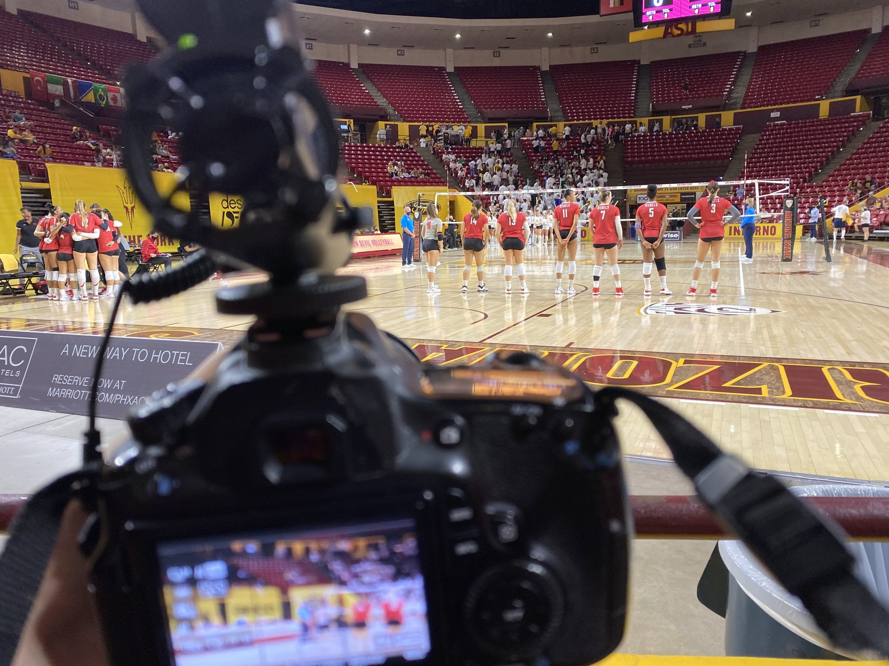
The State Press, on YouTube.


The State Press is Arizona State University's independent, student-run newsroom. The video work there meant producing publishable pieces on a tight, recurring schedule while still making room for the stories worth more time.
A newsroom lives or dies on consistency. Recurring coverage, games, campus events, and topical moments, has to turn around fast and look the same from one piece to the next. The hard part is holding that cadence while still finding room for the deeper features that actually build an audience, all without a big crew or budget.
Repeatable event edits
Built a video-first workflow for recurring coverage that could turn around quickly and stay consistent piece to piece. A repeatable template for sports and campus events means the newsroom ships reliably, week after week, instead of reinventing the edit every time.
Deeper dives
On the right stories, community, university, sports, and recurring topics, the edit got room to breathe and the reporting went further. These are the features that stand out in a feed of fast turnarounds and give the audience a reason to keep coming back.
Craft
A journalist's eye runs through all of it. Honest framing, clean sound, and pacing that fits the platform and the length of the piece.
A dependable stream of published video across the calendar, with sharper storytelling on the features that earned the extra time. The repeatable workflow kept coverage consistent and fast, and the deeper pieces built a body of work strong enough to carry into a professional reel.
Running a newsroom or a content operation? Repeatable pipelines beat heroic efforts.
My State Press work, in the feed.
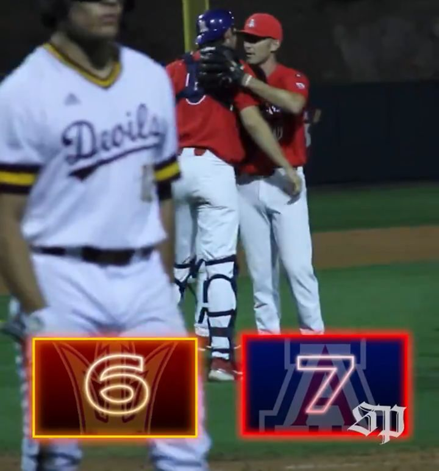
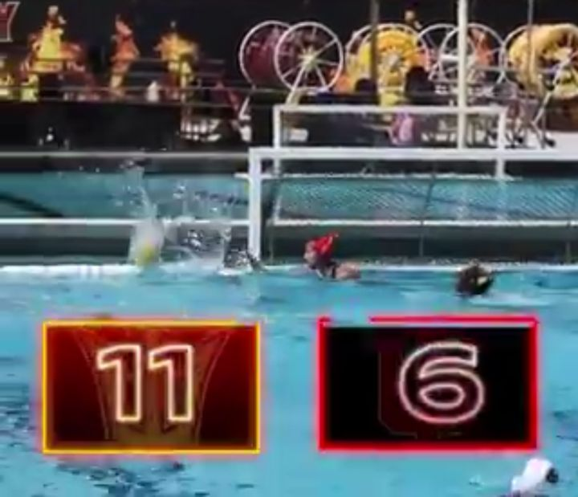
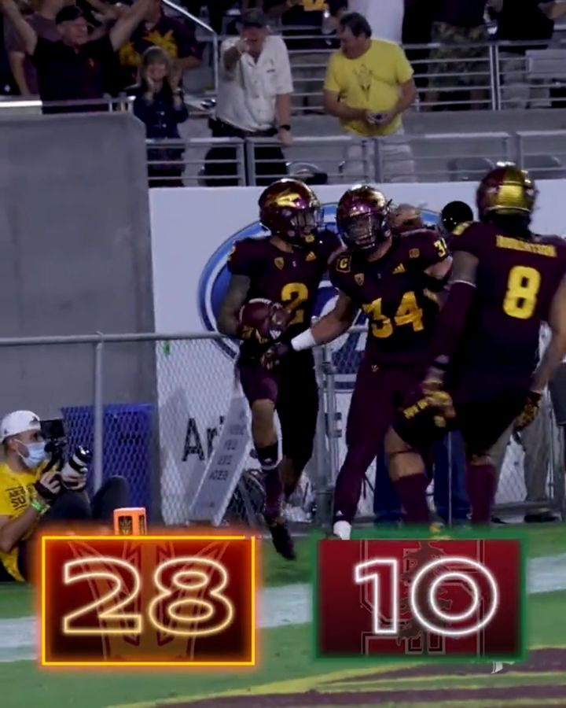
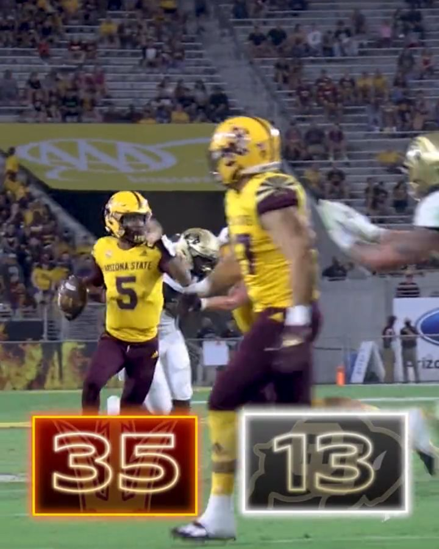
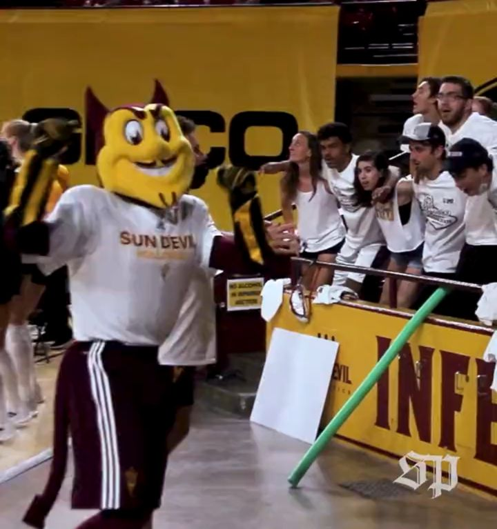
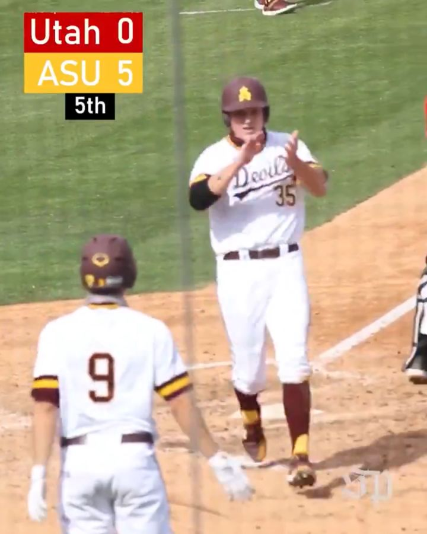
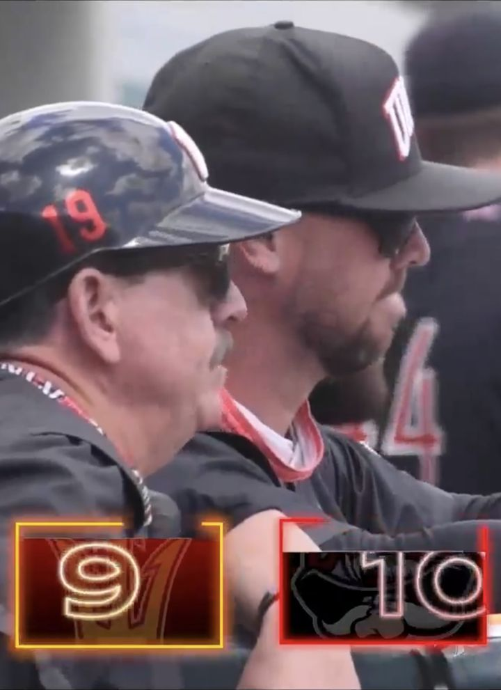
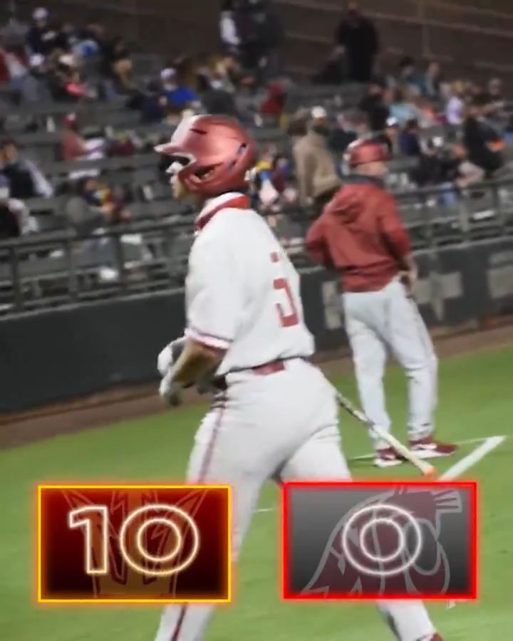
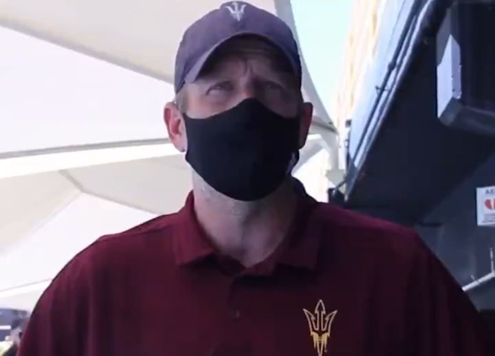
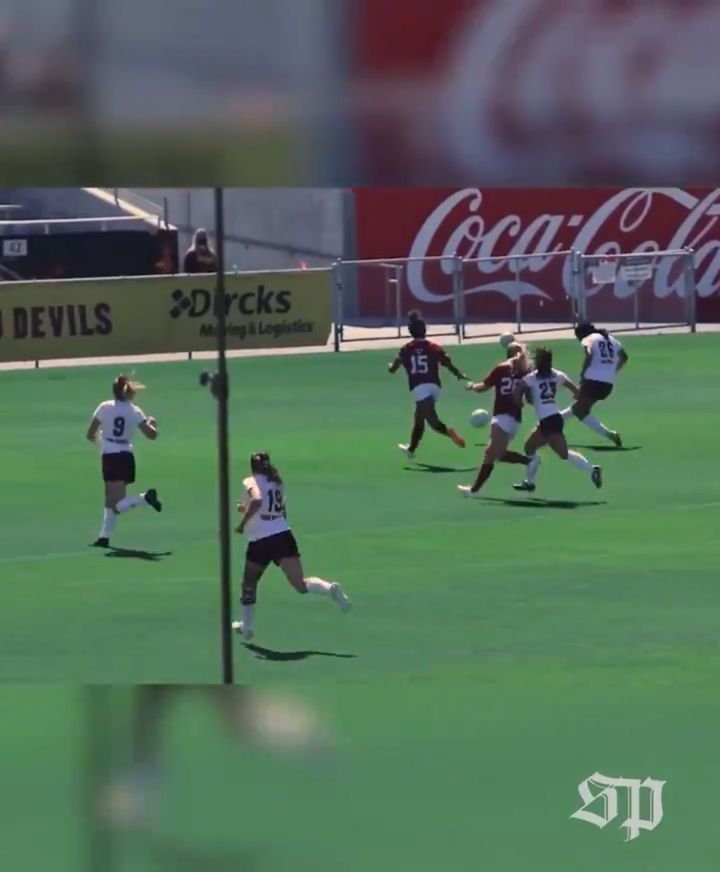
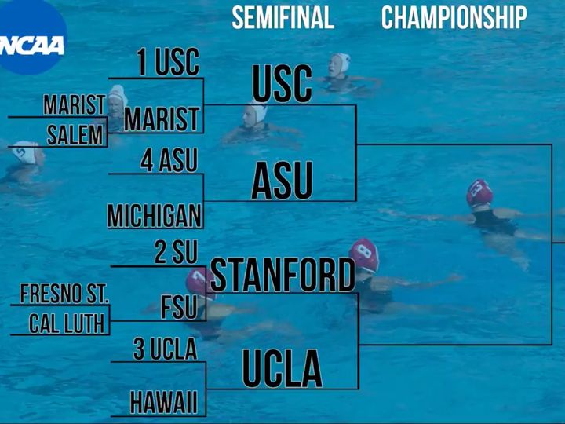
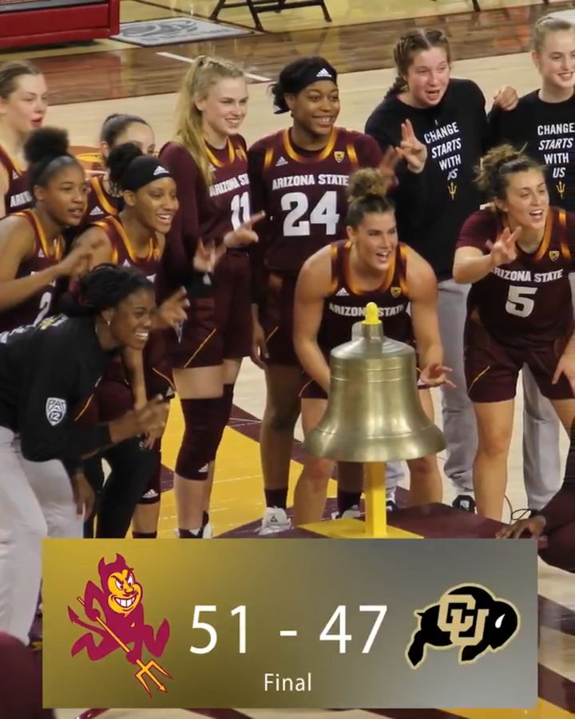